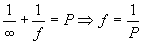
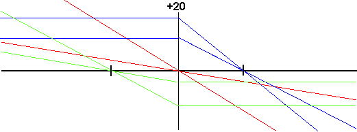
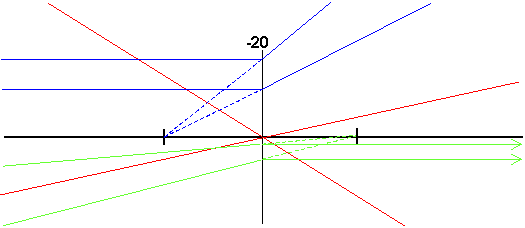
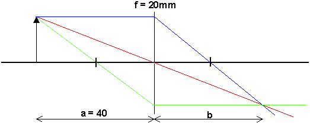
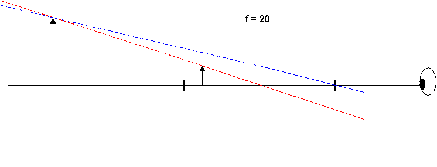
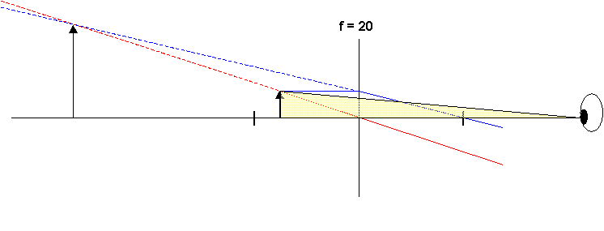

Avbildning i tunn lins
Om vi använder
linsmakarformeln två gånger på två ytor med försumbart avstånd emellan får vi linsformeln där P är styrkan (i dioptrier) för resp yta
där P är styrkan (i dioptrier) för resp yta
I denna är a och b objekts och bildavstånd och lyder samma teckenkonvention som s och s' i linsmakarformeln.
Vi definierar nu fokallängd (eller brännvidd) som bildavstånd då objektsavståndet är oändligt får vi

Dvs parallella strålar bryts samman på fokallängds avstånd från linsen.
Med utgångspunkt från linsformeln kan man formulera ett antal
som vi ska använda oss av framöver.
Vi behöver tre stråltyper(egentligen behövs bara två, men ibland blir en av typerna av olika skäl lite åbäkig att använda och då är det bra att ha en i reserv)
Typ 1 (ritas med blå färg) är parallel med symmetriaxeln in mot linsen och bryts följaktligen så att den skär symmetriaxeln på fokallängds avstånd (dvs i fokus).
Typ 2 (grön) är omvändningen till typ 1 och går alltså genom fokus på väg in mot linsen. Där bryts den så att den blir parallell med symmetriaxeln
Typ 3 (röd) går genom linsens mittpunkt. Där är linsens bägge ytor parallella vilket innebär att strålen inte ändrar riktning utan fortsätter rakt fram. (Annars skulle inte vindrutor vara tillåtna i bilar, eller hur?)

Dessa definitioner gäller även för negativa linser, men det praktiska resultatet bli annorlunda eftersom exvis fokus för de inkommande strålarna ligger i objektsrymden. Jfr fig

Exempel på konstruktion i tunn positiv lins
Tag en lins med fokallängd 20mm och placera ett objekt 40mm från den.
Objekt ritas i denna fantasifulla vetenskap som en pil, med bas på symmetriaxeln.
Av alla strålar som går ut från pilspetsen väljer vi de som är av typ 1, 2 eller 3, följer dem genom linsen och ser var de går ihop eller ser ut att gå ihop. Där ligger bilden enligt vår
definition i kap 1
Kolla genom att sätta in a=40mm och f= 20mm i linsformeln att det vi konstruerat fram ser OK ut.
Rita därefter själv hur det blir vid
objektsavstånd 35 resp 50mm och kolla med linsformeln att den ger samma resultat.Flyttar vi objektet åt höger flyttar sig bilden också åt höger.
Följer vi den röda strålen ser vi vidare att förstoringen (=kvoten mellan bildhöjd och objektshöjd) blir b/a. Detta förstoringsmått är bra när vi har reella bilder (projektorer och kameror exvis), men som vi ska se oanvändbart i instrument med virtuella bilder (kikare, mikroskop)
En helt annan situation inträffar om vi lägger objektet innanför fokus (=närmre linsen). Nedan finns situationen utritad för f=20mm och objektsavstånd 15mm.

Vi ser att strålarna efter linsen går isär dvs det blir ingen reell bild!
Däremot ser de ut att komma från en punkt.
Aha!!!!
Den virtuella bilden!
Gör nu själv
(?) samma sak fast med a=10mmVi ser att den blir större än objektet, alltså har vi ett förstoringsglas. ....eller?
För att säga om bilden blir större än objektet i våra ögon måste vi avgöra vilken vinkel de upptar, och då kommer avståndet också in.
Nedan två figurer där vi ser den synvinkel
(gul) som upptas av objekt resp bild, om betraktaren befinner sig en bit från linsen (som moster Agda gör när hon tittar på prinsessorna i Året Runt med förstoringsglas)
Förhållandet mellan dessa vinklar (vinkel med resp utan instrument) kallas vinkelförstoring och är det meningsfulla sättet att uttrycka förstoring i ett instrument med virtuell bild
Lägger vi ögat alldeles intill linsen får vi vinkelförstoringen 1, men även detta kan vara användbart:
Lägg objektet alldeles intill ögat (25mm avst). Det upptar nu en stor synvinkel, men vi ser det inte ändå (tusan så förargligt) därför att vi inte kan se skarpt (=ackommodera) på det avståndet. Tar vi nu en lins med fokallängd 25mm (flytta inte på objektet under tiden) och placerar den mellan objekt och öga kommer bilden att flyttas ut till stort avstånd med bibehållande av den fina synvinkeln.
Luppen har alltså vinkelförstoringen 1 om den används på detta sätt.
Därefter ska vi kolla om vi begripit hur det fungerar i en negativ lins.
Försök rita alla strålar till ett objekt 40mm före en lins med fokallängd -30mm.
Kolla därefter resultatet med linsformeln.
Fusk bestraffas med färdigritad strålgång.
Om objektet består av flera punkter, vilket de flesta objekt gör finns det exakt en röd, en grön och en blå stråle från varje punkt som går ihop i motsvarande punkt i bilden. Jfr följande fig (fritt Picasso)

Alla punkter på objektet ger alltså strålar som går genom alla punkter i linsen!
...va sa han nu???? Tänk efter (med hjälp av figuren), det är väsentligt för det som kommer att sägas om avbildningskvalitet så småningom.
Till
nästa sida (Huvudplansbegreppet) Hela denna sida är nivå 2 och 3Till
nästa nivå-1-sida (Kikaren och teleskopet)Till
nästa kapitel (Begränsningar i optiska system)Till
innehållsförteckningen